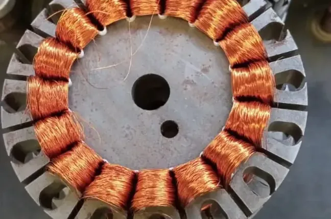
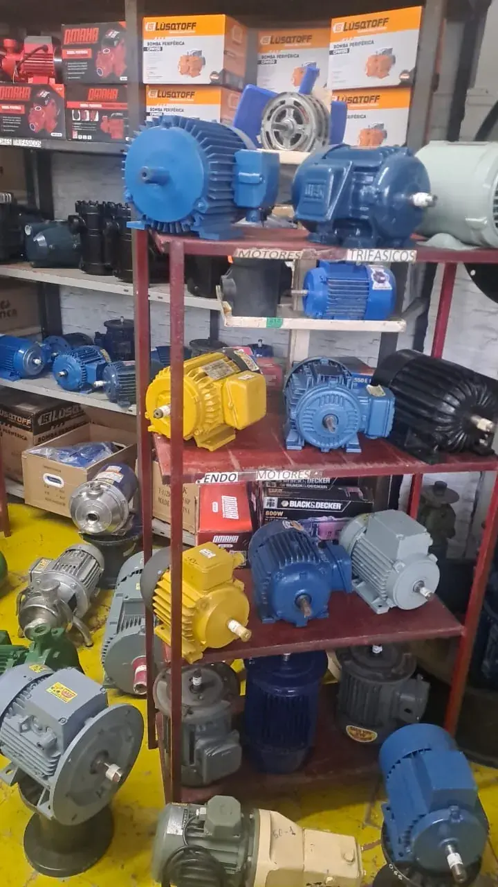
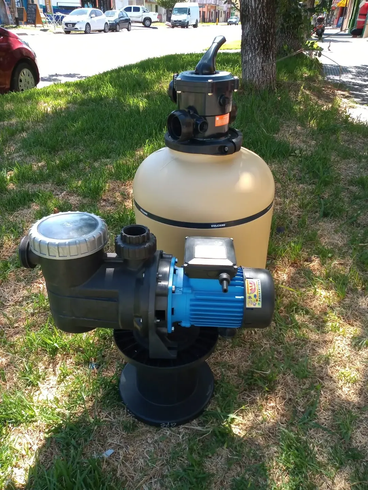
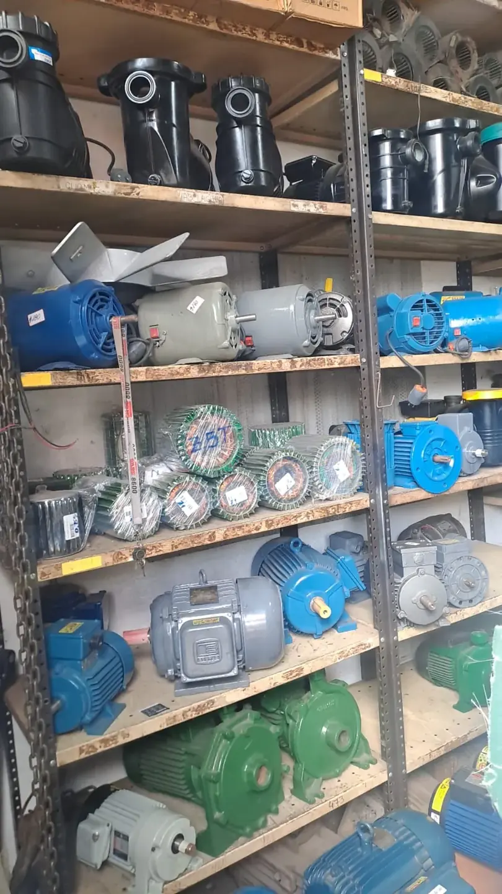

01
BOBINADOS
Motores eléctricos
Bobinados y reparación de motores monofásicos, trifásicos e industriales.
Consultar por un motorBobinados · reparación · venta
Bobinados y reparación de motores eléctricos, bombas de agua, ventiladores industriales y extractores de aire en Paraná.
TRABAJO DE TALLER
Contanos qué motor o equipo tenés y qué le sucede. Si podés, sumá una foto del motor o de su placa para orientar la consulta.
Cómo hacer una consulta
“Motores monofásicos, trifásicos e industriales.”
Bobinados Alf también repara bombas de agua, ventiladores industriales y extractores de aire. Consultá por tu equipo.
MOTORES Y EQUIPOS ELÉCTRICOS
Consultá por bobinados, reparación y venta de equipos en Bobinados Alf, Paraná.
BOBINADOS
Bobinados y reparación de motores monofásicos, trifásicos e industriales.
Consultar por un motorBOMBAS
Reparación de bombas de agua. Consultá por disponibilidad de equipos para venta.
Consultar por una bombaVENTILACIÓN
Reparación de ventiladores industriales y extractores de aire.
Consultar por un equipoEl plazo y el alcance se confirman según el tipo de equipo.
FOTOS COMPARTIDAS POR EL TALLER
Una muestra de motores, bombas y equipos que forman parte del trabajo de Bobinados Alf.



ANTES DE ACERCAR EL EQUIPO
Con algunos datos sobre el equipo, Bobinados Alf puede orientarte sobre cómo seguir.
Motor, bomba, ventilador o extractor. Si conocés el modelo, sumalo al mensaje.
Si podés, enviá una imagen del equipo o de la placa para dar contexto a la consulta.
Consultá por el trabajo, el plazo y la disponibilidad antes de acercar o retirar el equipo.
PARANÁ · ENTRE RÍOS
Bobinados Alf anuncia retiro a domicilio sin cargo. Consultá por WhatsApp la cobertura y la coordinación.
HABLÁ CON BOBINADOS ALF
Escribinos por WhatsApp, contanos qué le sucede y, si podés, mandanos una foto del motor o de su placa.
El mensaje queda en tus manos.
WhatsApp se abre para que lo revises antes de enviarlo.
Se abre WhatsApp con un mensaje preparado. Revisalo y elegí si querés enviarlo.
PREGUNTAS FRECUENTES
Si no encontrás tu respuesta, escribinos y contanos qué equipo tenés.
Hacer una consultaBobinados Alf informa trabajo con motores eléctricos monofásicos, trifásicos e industriales.
Sí. Entre los equipos mencionados por Bobinados Alf figuran bombas de agua, ventiladores industriales y extractores de aire.
Bobinados Alf anuncia 24 horas laborales para el bobinado. Consultá por WhatsApp el plazo y la disponibilidad para tu equipo.
El negocio anuncia retiro a domicilio sin cargo. Consultá la cobertura y la coordinación antes de acercar el equipo.